Last Updated: 2020-07-14
The MuleSoft APIkit OData Extension supports OData (Open Data Protocol) Version 2 for creating HTTP-based data services. Through these services, you can query the underlying data sources using HTTP.
In this codelab, you're going to build an OData API using the APIKit OData Extension. The API will expose data from a MySQL database. Additionally, the lab will show you how to implement the OData 2.0 query filters using DataWeave.
Open Anypoint Studio and click on Help and select Install New Software
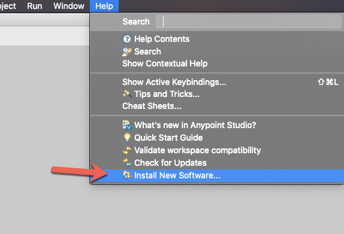
Click Add
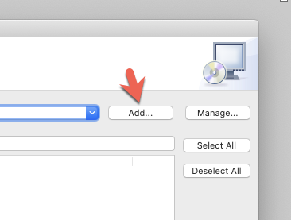
Fill in the Name and Location field with the following values
Name |
|
Location |
|
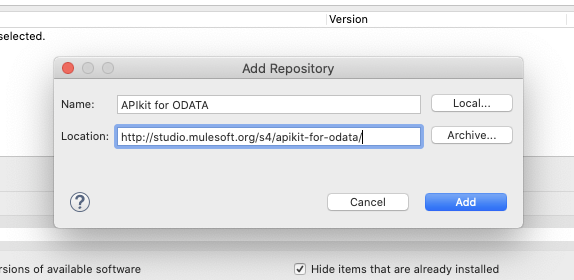
Click Add
In the list of Available Software, check the checkboxes next to Anypoint ODATA Plugin and click on Next
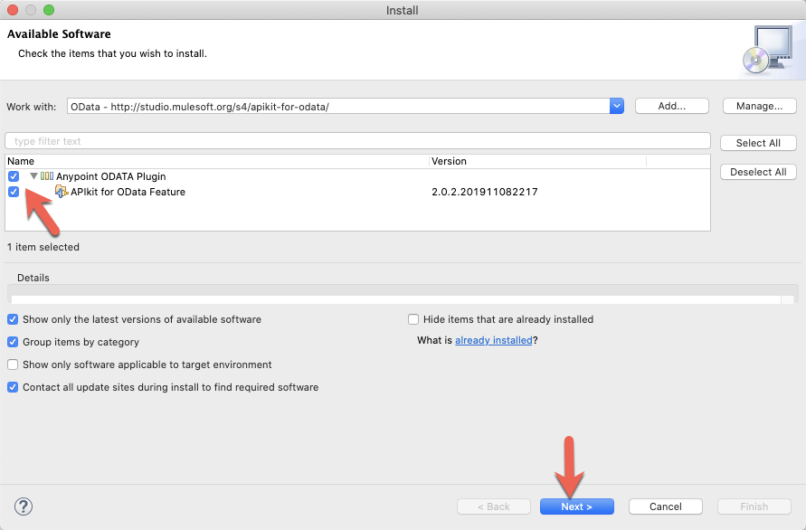
Click on Next in the Install Details window
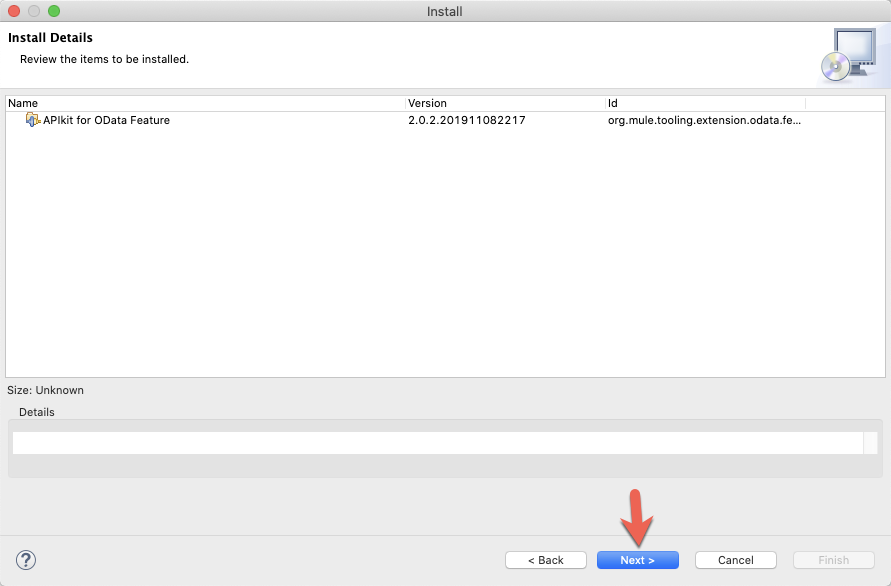
Click I accept the terms of the license agreement and click on Finish
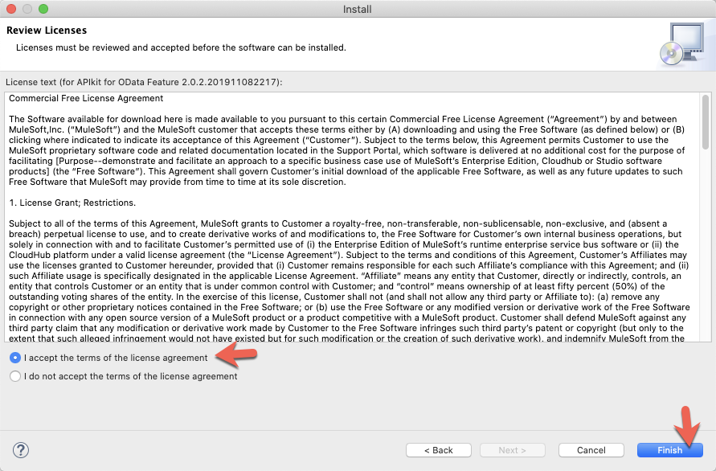
Click Restart Now to complete the installation of the plugin.
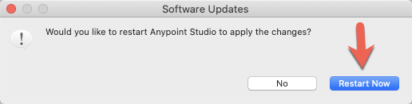
Open Anypoint Studio and create a new Mule Project by going to File > New > Mule Project.
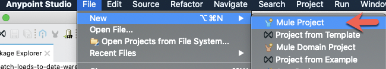
In the New Mule Project window, give the project a name (e.g. odata-api-example), select the latest runtime, and then click on Finish
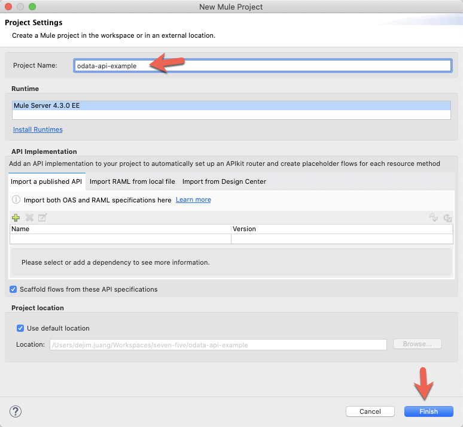
Expand the project using the Package Explorer and navigate to the src/main/resources folder. Right-click on the api folder and select New > RAML API Definition
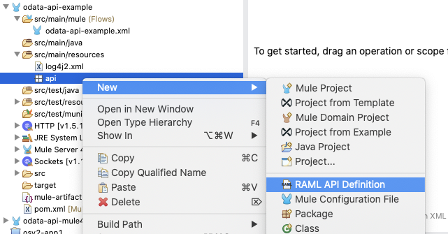
In the New RAML API Definition File window, give the file the name odata.raml in the File name: field and click on Finish.
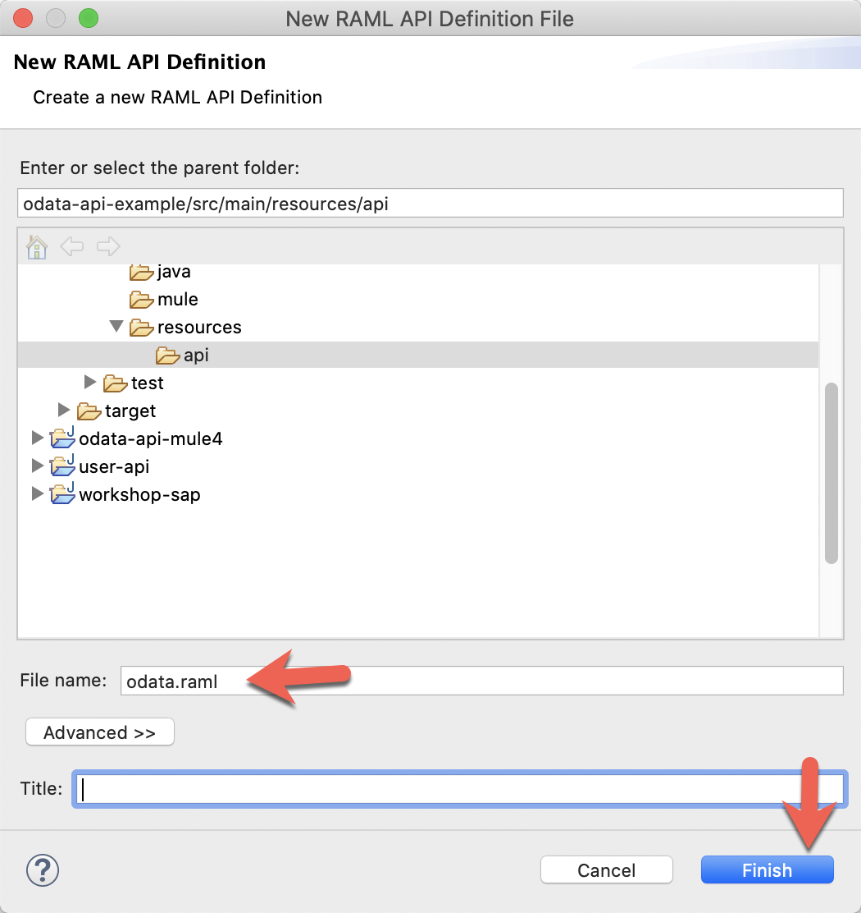
In the new file, paste the following RAML specification into the window. It should look like the screenshot below the specification. Don't worry about all the errors that pop-up in Studio, just save the file for now. Once you generate the OData API using the APIKit OData Extension, the errors will go away.
#%RAML 1.0 Library
uses:
odata: libraries/odataLibrary.raml
types:
customers:
(odata.remote): Customers
properties:
CustomerID:
type: string
(odata.key): true
(odata.nullable): false
maxLength: 5
required: true
CompanyName:
type: string
(odata.nullable): true
(odata.key): false
maxLength: 40
required: false
ContactName:
type: string
(odata.nullable): true
(odata.key): false
maxLength: 30
required: false
ContactTitle:
type: string
(odata.nullable): true
(odata.key): false
maxLength: 30
required: false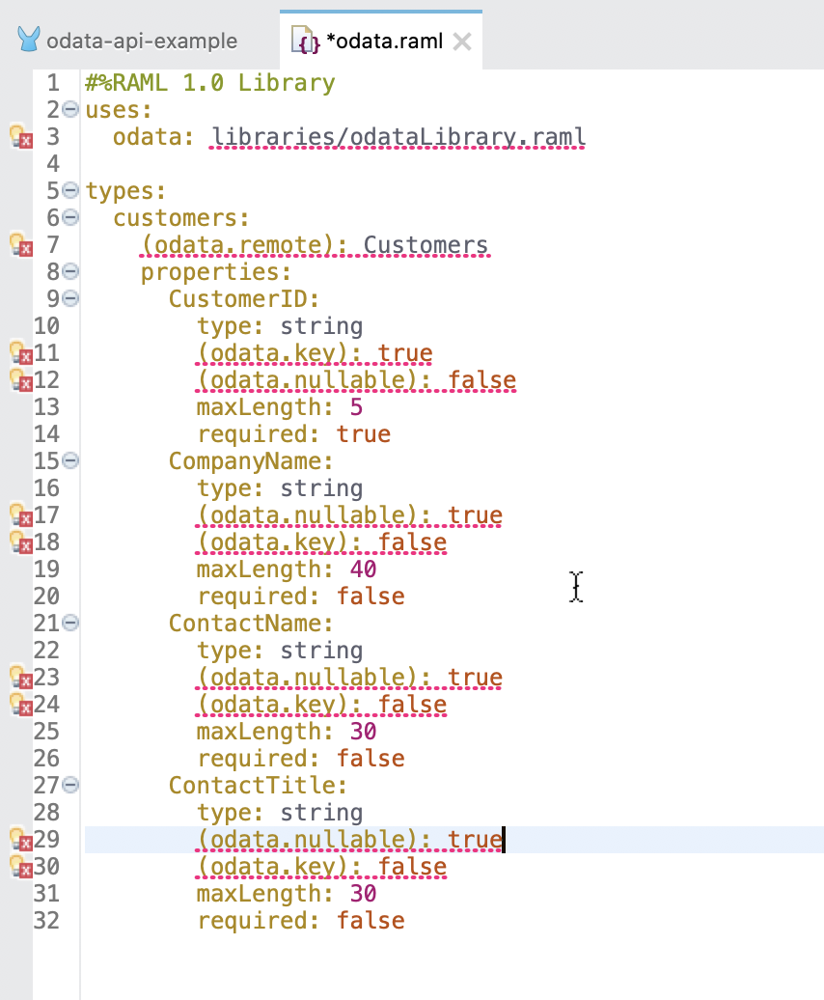
The odata.raml file is the Entity Data Model representation of a data source. In this case, we're defining a single collection called customers. The customers collection consists of four properties.
If you look at the diagram below, it shows the relationship between a relational database and a OData Entity Data Model.
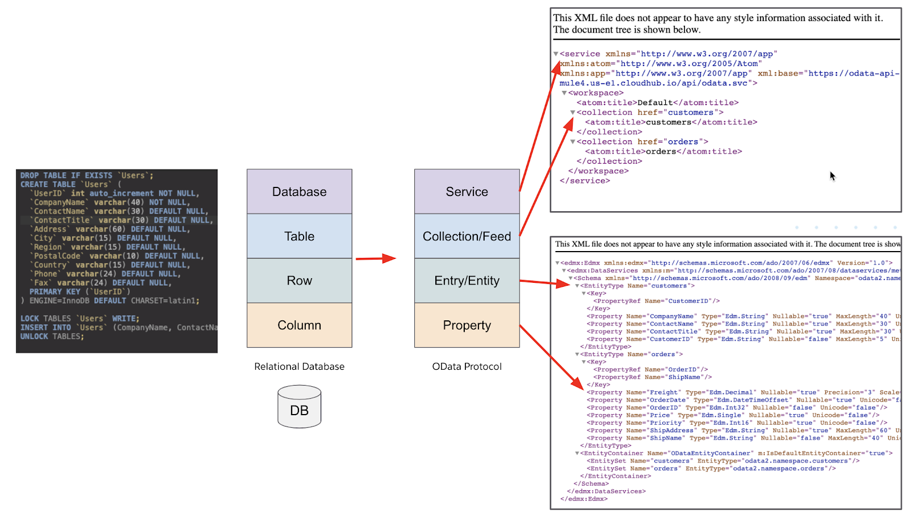
In the odata.raml file, you'll notice there are annotations that reference the odataLibrary.raml file. This file is automatically added to the project in the next step. It contains annotation types specific to OData properties and traits specific to OData query filters. We'll cover those more in detail later in the codelab.
In the Package Explorer, right-click on the odata.raml file and select Mule > Generate OData API from RAML Types. If the option is missing, the APIKit OData Extension wasn't installed properly.
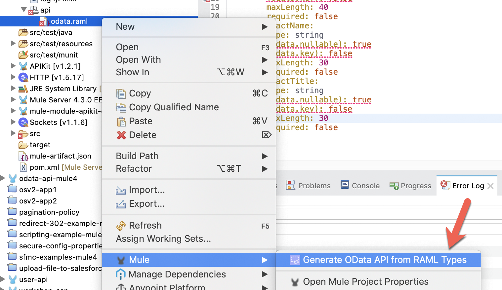
Once the API is generated from the RAML types, you'll find 3 new files in your project.
src/main/mule/api.xml | Auto-scaffolded API flows generated from the api.raml file. |
src/main/resources/api/api.raml | RAML file generated from the odata.raml file and the defined RAML types. |
src/main/resources/api/libraries/odataLibrary.raml | OData Entity Model RAML types used for annotations. |
First, open the odataLibrary.raml file from src/main/resources/api/libraries. This file is auto-generated and included with every APIKit OData project. It contains the annotations that are used to define the Entity Data Model for the OData API.
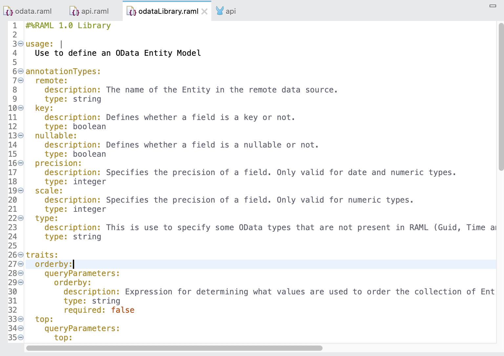
Next, open the api.xml file under src/main/mule. You can see all the flows that were auto-generated by the APIKit for OData. Each entity, in this case the customers, has multiple flows generated to handle each operation: GET, PUT, POST, DELETE.
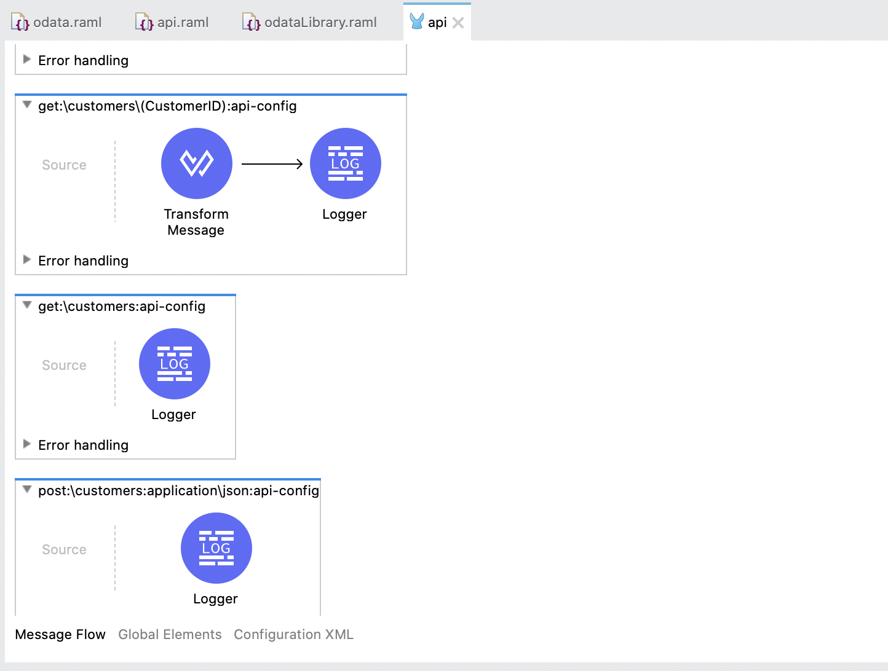
In the next section, we'll implement the API by connecting the get:\customers flows to a MySQL database as the source.
In order to implement and test the OData API, we need to setup the underlying data source. This can be from a single system or an orchestration of data from multiple sources. For the purpose of this codelab, we'll leverage a single table in a MySQL database.
As noted in the beginning, this codelab assumes you have access to a MySQL database. If you don't, you can follow the optional steps to setup Docker and a local instance of MySQL to test against. Otherwise you can skip the next section and proceed with setting up the Database Connector in your Mule project.
Download and install Docker Desktop by following this link.
https://www.docker.com/products/docker-desktopOnce you have Docker installed, you can quickly spin up a MySQL instance locally by running the following commands.
docker pull mysqlNext, run the docker instance with MySQL 5.7.31 listening on port 3306. Don't forget to change the container name and root password in the command before running it.
docker run --name <container name> -p3306:3306 -e MYSQL_ROOT_PASSWORD=<password> -d mysql:5.7.31Once the container is up and running, you can use a database tool like DBeaver to connect to the local instance and set up a table.
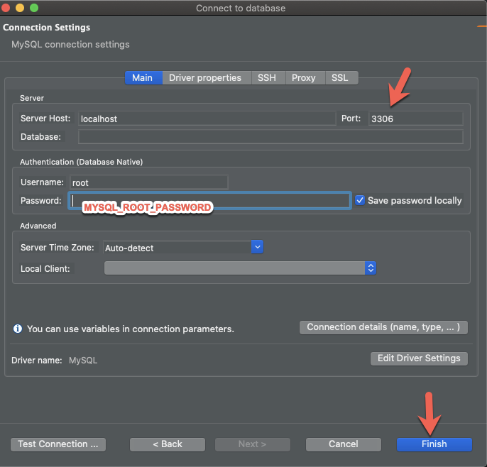
Right-click on the Databases folder, and select Create New Database
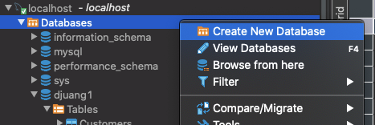
Give the database a name (e.g. odata) and click on OK
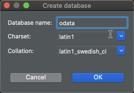
Click on SQL Editor and select SQL Editor
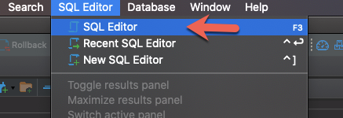
Make sure the SQL Editor window is pointing to the correct server (localhost) and correct database (odata)
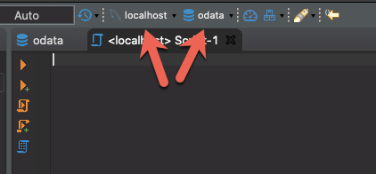
Copy, paste and run the following SQL script against your database to add a new table with some auto-generated data.
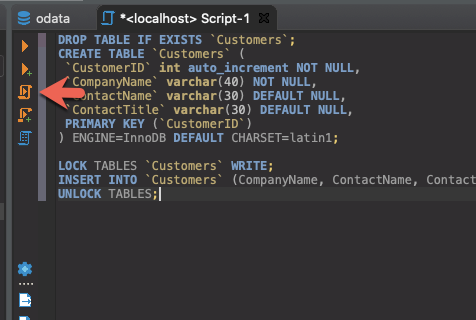
DROP TABLE IF EXISTS `Customers`;
CREATE TABLE `Customers` (
`CustomerID` int auto_increment NOT NULL,
`CompanyName` varchar(40) NOT NULL,
`ContactName` varchar(30) DEFAULT NULL,
`ContactTitle` varchar(30) DEFAULT NULL,
PRIMARY KEY (`CustomerID`)
) ENGINE=InnoDB DEFAULT CHARSET=latin1;
LOCK TABLES `Customers` WRITE;
INSERT INTO `Customers` (CompanyName, ContactName, ContactTitle) VALUES ('Alfreds Futterkiste','Maria Anders','Sales Representative'),('Ana Trujillo Emparedados y helados','Ana Trujillo','Owner'),('Antonio Moreno Taquera','Antonio Moreno','Owner'),('Around the Horn','Thomas Hardy','Sales Representative'),('Berglunds snabbkp','Christina Berglund','Order Administrator');
UNLOCK TABLES;Your table should look like the following:
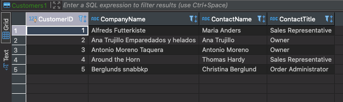
Switch back to Anypoint Studio and in the Mule Palette, click on Add Modules
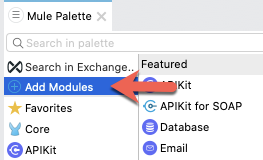
Drag and drop the Database component into the left column to add it to the project. If it asks you to Select module version, choose the latest version you have and click on Add.
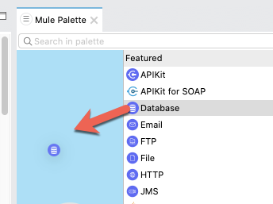
For the list of available operations, drag and drop the Select operation into the canvas and place it in the get:\customers:api-config flow
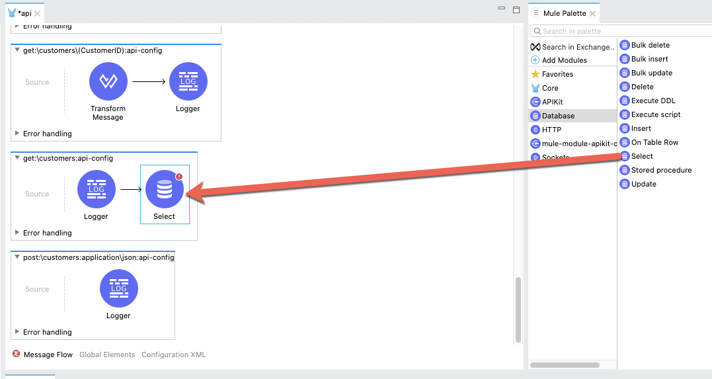
In the Mule Properties tab, click on the green plus sign to add the connector configuration for the MySQL database.
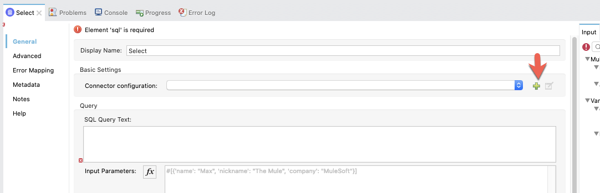
In the General tab, click on Connection and change the value to MySQL Connection
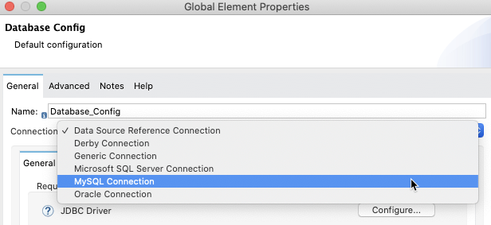
In the Required Libraries section, click on the Configure button and select Add recommended libraries
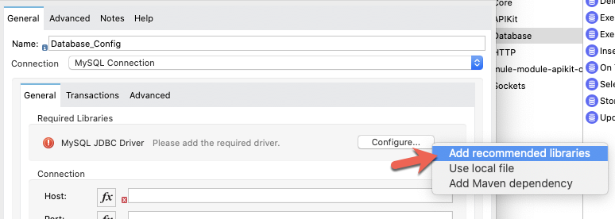
Click OK to accept the recommended libraries for MySQL.
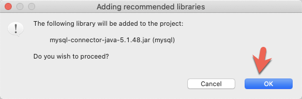
Fill in the fields in the Connection section with the details for your MySQL database. If you followed the previous steps to create a local database using Docker, the settings should be the same below (except of course the password you used). Click on OK
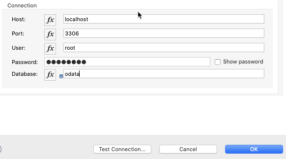
If you're using a local instance of MySQL running in Docker, you may need to run through the following steps. Click on the Advanced tab and change the Connection properties dropdown in the Connection setting to Edit inline and click on the green plus sign.
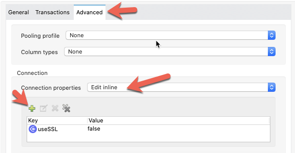
Fill in the Key and Value field with the following values and click on Finish
Key | useSSL |
Value | false |
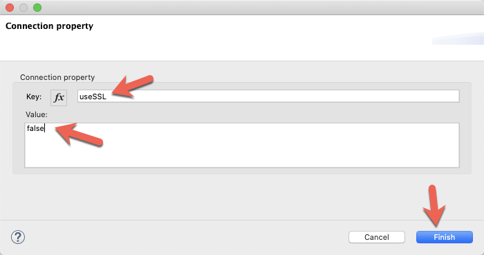
Click on OK and move on to the next step.
Back in the Mule Properties tab for the Select operation, copy and paste the following SQL script into the SQL Query Text box.
SELECT * FROM Customers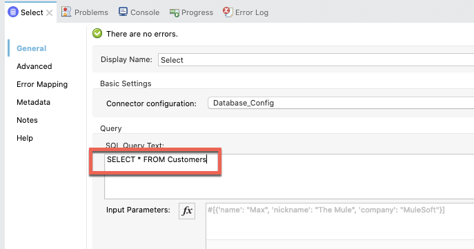
If everything was configured correctly, you should be able to see the metadata being pulled for Data Sense in the Output tab to the right.
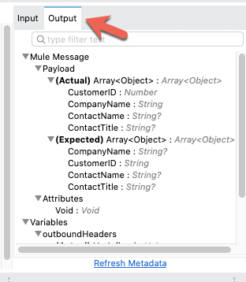
We need to transform the response from the database to the format that we need for the OData API. Back in the Mule Palette, click on Core and drag and drop the Transform Message into the canvas and place it after the Select operation that we just configured.
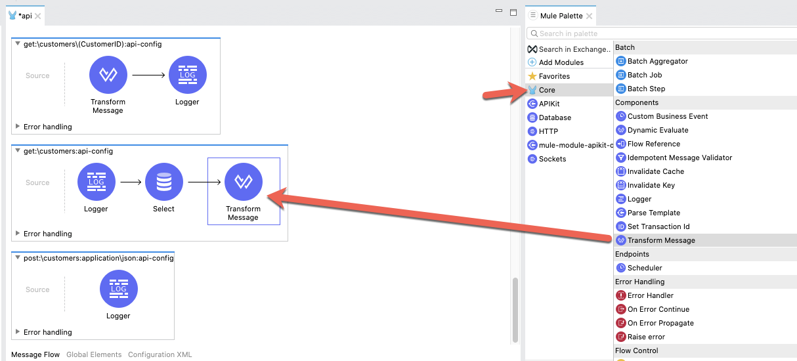
In the Mule Properties tab for the Transform Message, the data doesn't need to be mapped for each individual field for the response returned by the OData API. As you can see in the screenshot below, the payload just needs to be mapped to the key, entries.
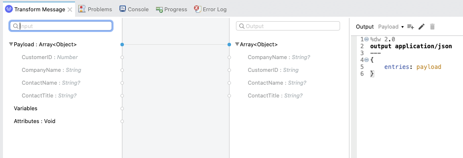
You can copy and paste the script below into your DataWeave script window.
%dw 2.0
output application/json
---
{
entries: payload
}That completes the setup for one flow in your OData API. In the next section, we'll test out the API and run through some standard OData API requests.
Our next step is to test the flow we've built. Right click on the canvas and click on Run project odata-api-example
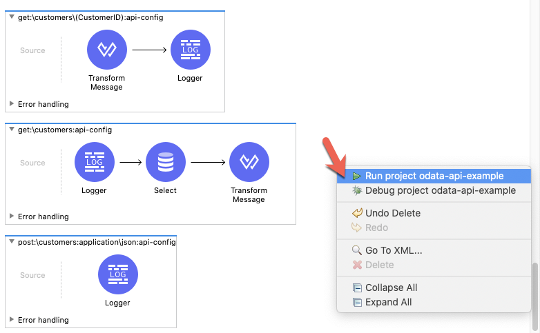
The Console tab should pop-up now. Wait for the status to show DEPLOYED before moving onto the next step.
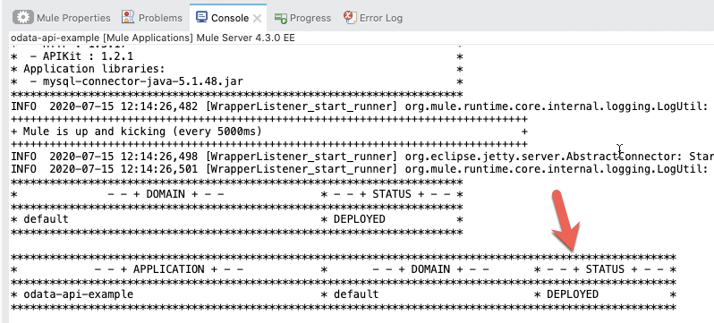
Let's test out our flow now to see the available collections from the OData API. Switch to your web browser and enter the following URL:
http://localhost:8081/api/odata.svcIf everything was configured correctly, you should see the following result in your browser.
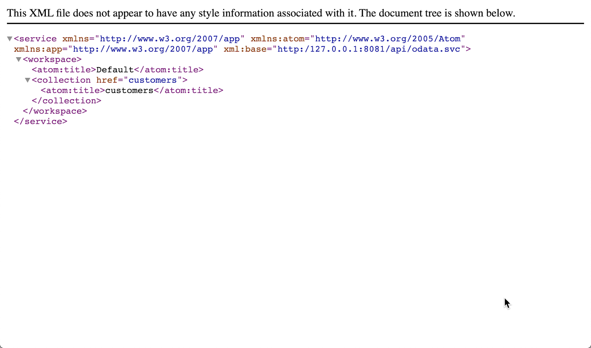
You can see the customers collection matches the Entity Data Model that we defined with the customers type.
Additionally the OData API also exposes the structure of the OData service resources, operations, and entity data model. In the browser, change the URL to the following:
http://localhost:8081/api/odata.svc$metadataThe response will look like the following screenshot.
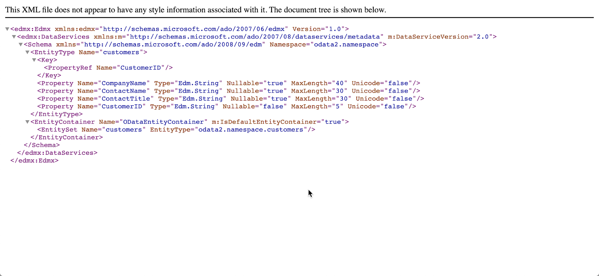
Lastly we can query the data source to get the list of customers in either XML or JSON. You can navigate to either of the following URLs to see the data returned from the OData API.
http://localhost:8081/api/odata.svc/customers
http://localhost:8081/api/odata.svc/customers?$format=json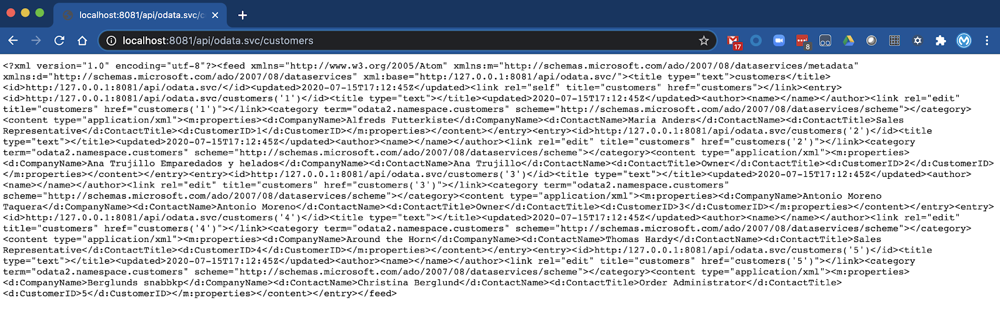
When creating an OData API using the APIKit OData Extension, there are additional capabilities that need to be configured in the Mule flows to support the OData protocol query filters. This is handled by composing the request that will be run against the data source.
In this next section, I'll walk you through the process of building a DataWeave script to select data from our database based on specific filters. One thing to note is that this script is specific to a MySQL database table. If you're hitting another source, you'll need to configure the script accordingly.
First, let's talk about the OData queries before jumping into the actual script.
All OData APIs provide a standard set of query filters. The table below shows these standard filters and what is available out of the box with the APIKit OData Extension.
Query | Description | Out-of-the-box |
| By default you would have noticed that the data returned is in an XML feed. This query allows us to change the format of data to JSON. (e.g. $format=json) | Yes |
| This query option helps to limit the data returned by the service. | No |
| This can be treated as the opposite of $top. The skip queries can be used to skip records. | No |
| This will return the total number of records as part of the response payload. We can extract the number from the field <count></count>. | No |
| Use this to sort the records returned by the service. | No |
| Query to reduce the number of calls we need to make to access a particular set of data. | No |
| This can be compared to the ‘where' query in SQL. Please refer this link for the extensive list that you can use. | No |
| As in any SQL query, this query option can be used to Select specific or all fields of an Entity set or entity. | No |
You can read more details about these query filters by following this link.
Now that we know about the standard OData query strings, let's jump into the DataWeave script that builds the MySQL database select query based on the filters.
If we look at the SQL select query below, there are specific strings that need to be dynamically generated. ContactName, Customers, WHERE CustomerId = 1, ORDERBY ContactName, and LIMIT 5 all need to be generated based on the filters that are passed in the request.
SELECT ContactName FROM Customers WHERE CustomerId = 1 ORDERBY ContactName LIMIT 5So replacing those with DataWeave functions that we'll build, this is what the final SQL Query text will look like. As we walk through the next steps, I'll show you what each of those functions will look like.
"SELECT " ++ generateSqlFields(select) ++ " FROM $remoteEntityName"
++ (
(toSQLWhere(filter)) ++
(toSQLOrderBy(orderby)) ++
(toSQLSkipAndTop(top,skip))
) If you run your OData API in Debug mode in Anypoint Studio and put a breakpoint at the start of the flow, you can introspect and see the variables that are generated by the APIKit OData Extension. See a screenshot of those below.
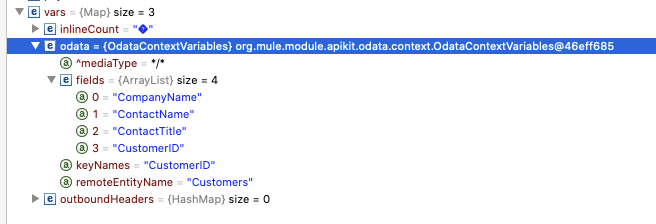
In the DataWeave, each of these are stored into variables that will be used to compose the request. In the code below, we create 3 variables, entityFields, keys, and remoteEntityName
// Variable that contains the fields of your entity. It's a list of string (List<String>)
var entityFields : Array<String> = vars.odata.fields match {
case fields is Array<String> -> fields
else -> []
}
// Variable that contains the keys of your entity
var keys : String = vars.odata.keyNames match {
case keyNames is String -> keyNames
else -> ""
}
// Variable that contains the table's name
var remoteEntityName = vars.odata.remoteEntityName match {
case remoteEntityName is String -> remoteEntityName
else -> ""
}Additionally, we need to determine which query filter parameters are passed in the request. Going back to the Mule Debugger, you can see those stored in attributes.queryParams. In this case, I'm just passing in $top=5
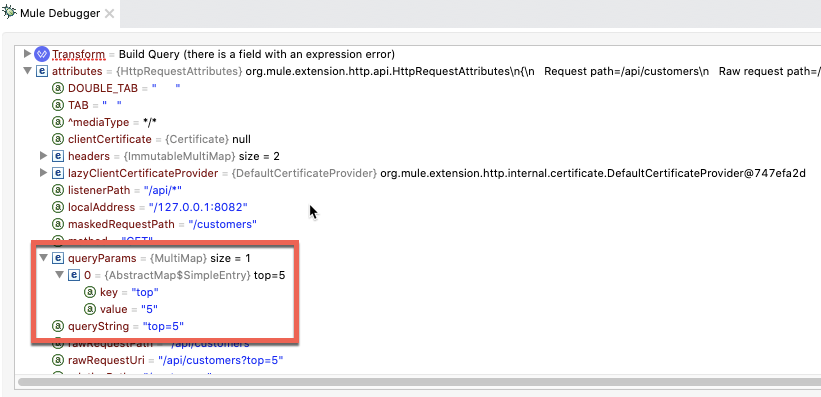
In DataWeave, we'll store and filter each of the OData query filters. If it was passed in the request in the query parameters, we'll store those, otherwise we'll store a blank string.
// APIkit Odata Service puts your oData filters into the queryParams
var filters = attributes.queryParams
var top : String = filters.top match {
case top is String -> top
else -> ""
}
var skip : String = filters.skip match {
case skip is String -> skip
else -> ""
}
var select : String = filters.select match {
case select is String -> select
else -> ""
}
var filter : String = filters.filter match {
case filter is String -> filter
else -> ""
}
var orderby : String = filters.orderby match {
case orderby is String -> orderby
else -> ""
}Next we need to create a variable that determines and stores the specific fields that need to be returned in the query. If the $
select operation is passed in, we need to filter those fields, otherwise we return all the fields which are represented by the entityFields variable that we created earlier.
// It checks for a select filter in case you need less fields than you're actually exposing. If there is no select present, it just returns your fields defined in your metadata.
var generateSqlFields = (select) -> ((if (select != "" )( (select splitBy ",") -- (keys splitBy ",") ++ (keys splitBy ",")) else entityFields) map "`$`" ) joinBy ", "If the user passes in the $filter operation, this will generate the WHERE part of the SQL query.
// Transform oDataFilters into MySQL Filters
var odataFilterToSQLFilter = (odataFilter) ->
odataFilter replace "eq null" with "is null"
replace "ne null" with "is not null"
replace " eq " with " = "
replace " ne " with " != "
replace " gt " with " > "
replace " lt " with " < "
replace " ge " with " >= "
replace " le " with " <= "
replace " and " with " AND "
replace " or " with " OR "
// Generate the where part of your query.
var toSQLWhere = (odataFilter) -> if(odataFilter != "") " WHERE " ++ odataFilterToSQLFilter(odataFilter) else ""For the ORDER BY part of the query, if $orderby is passed in, this will create the string needed for the SQL Script text.
// This function transforms your orderby oData filters into the MySQL Order by format.
// Transforms something like orderby=myField, ASC into ORDER BY myField, ASC
// If no orderby is present, it just returns an empty string
var toSQLOrderBy = (orderby ) -> if(orderby != "") (" ORDER BY " ++ (orderby replace "=" with " ")) else ""For the LIMIT and OFFSET part of the SQL query, these correspond to the the $top and $skip query filters respectively.
// This function transforms your skip and top oData filters into MySQL LIMIT format.
var toSQLSkipAndTop = (top, skip) -> if(top != "" and skip != "") " LIMIT $top OFFSET $skip" else if (top == "" and skip != "") " LIMIT 2147483647 OFFSET $skip" else if (top != "" and skip == "") " LIMIT $top" else ""Combining all of the DataWeave into one script, the following is what we'll use in our OData API.
%dw 2.0
output application/java
var entityFields : Array<String> = vars.odata.fields match {
case fields is Array<String> -> fields
else -> []
}
var keys : String = vars.odata.keyNames match {
case keyNames is String -> keyNames
else -> ""
}
var remoteEntityName = vars.odata.remoteEntityName match {
case remoteEntityName is String -> remoteEntityName
else -> ""
}
var generateSqlFields = (select) -> ((if (select != "" )( (select splitBy ",") -- (keys splitBy ",") ++ (keys splitBy ",")) else entityFields) map "`$`" ) joinBy ", "
var odataFilterToSQLFilter = (odataFilter) ->
odataFilter replace "eq null" with "is null"
replace "ne null" with "is not null"
replace " eq " with " = "
replace " ne " with " != "
replace " gt " with " > "
replace " lt " with " < "
replace " ge " with " >= "
replace " le " with " <= "
replace " and " with " AND "
replace " or " with " OR "
var filters = attributes.queryParams
var top : String = filters.top match {
case top is String -> top
else -> ""
}
var skip : String = filters.skip match {
case skip is String -> skip
else -> ""
}
var select : String = filters.select match {
case select is String -> select
else -> ""
}
var filter : String = filters.filter match {
case filter is String -> filter
else -> ""
}
var orderby : String = filters.orderby match {
case orderby is String -> orderby
else -> ""
}
var toSQLOrderBy = (orderby ) -> if(orderby != "") (" ORDER BY " ++ (orderby replace "=" with " ")) else ""
var toSQLSkipAndTop = (top, skip) -> if(top != "" and skip != "") " LIMIT $top OFFSET $skip" else if (top == "" and skip != "") " LIMIT 2147483647 OFFSET $skip" else if (top != "" and skip == "") " LIMIT $top" else ""
var toSQLWhere = (odataFilter) -> if(odataFilter != "") " WHERE " ++ odataFilterToSQLFilter(odataFilter) else ""
---
"SELECT " ++ generateSqlFields(select) ++ " FROM $remoteEntityName"
++ (
(toSQLWhere(filter)) ++
(toSQLOrderBy(orderby)) ++
(toSQLSkipAndTop(top,skip))
) Back in Anypoint Studio in our project, click on the Select operation in the flow and change the SQL Query text to the following.
#[payload]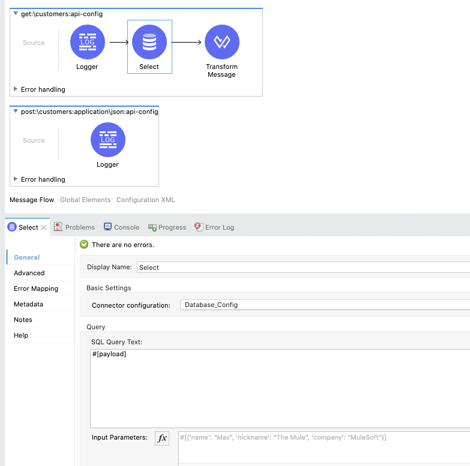
From the Mule Palette, drag and drop a Transform Message component into the flow and place it before the Select operation.
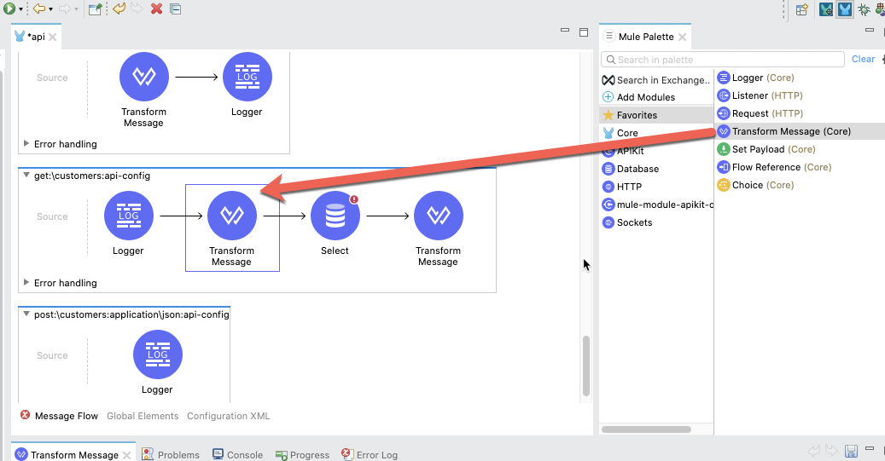
Copy and paste the script above into the DataWeave script window of the Transform Message component.
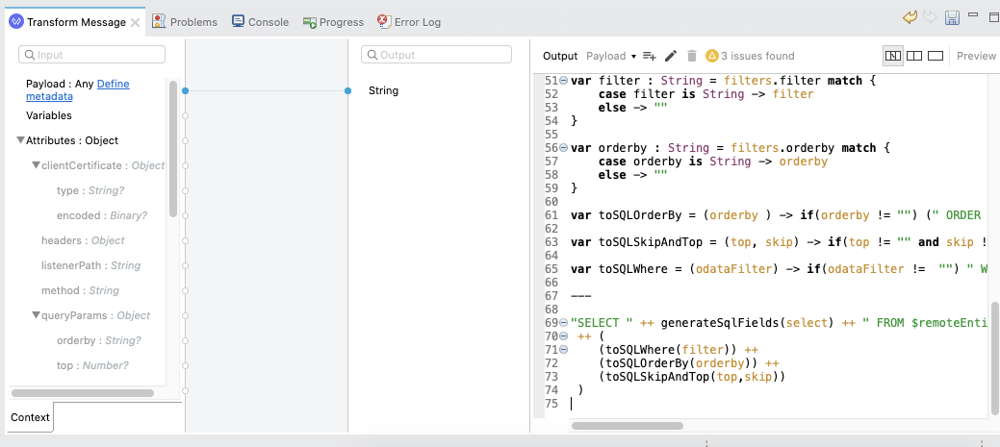
Let's test out the new changes and see the query strings in action. Right click on the canvas and click on Run project odata-api-example
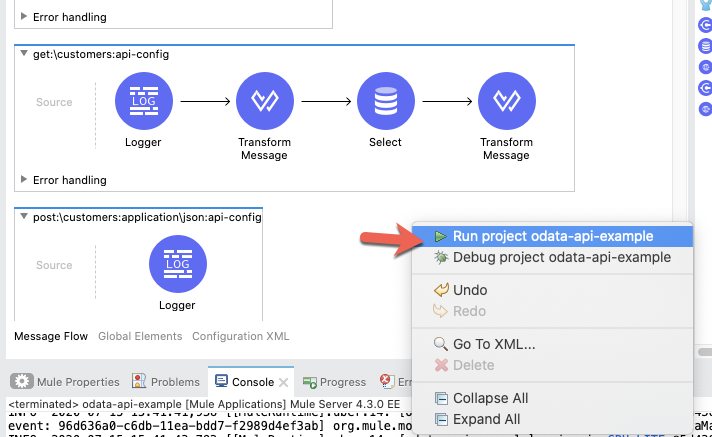
When the application is successfully deployed, switch to your browser and open the following URL.
http://localhost:8081/api/odata.svc/customers?$top=5&$skip=2&$select=ContactName&$format=jsonIf everything was configured correctly, you should see the following response from the OData API.
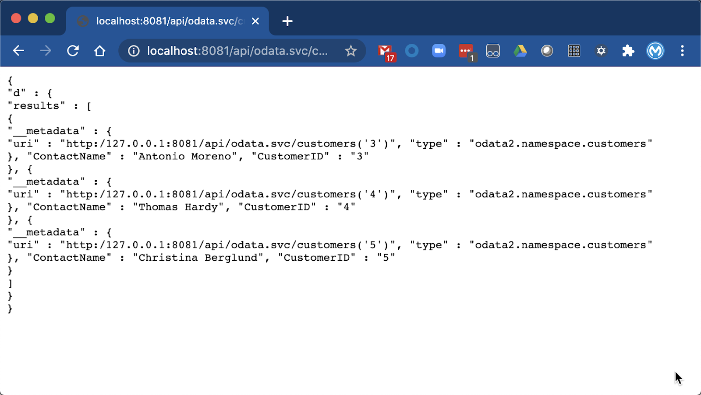
Congratulations, you've successfully built an OData API using the APIKit OData Extension. You learned about creating an Entity Data Model using RAML to describe a data source. You've taken that entity data model and auto-generated an API in Anypoint Studio. And you've implemented the connection to a MySQL database. Lastly, you learned about how to implement the OData 2.0 query strings using DataWeave.
Building an OData API in MuleSoft does require some additional configuration to handle the standard OData 2.0 query strings. You can find a complete OData API example for Mule 4 here.
You do need to configure the project to point to your own MySQL instance but it provides some additional DataWeave script examples that are needed for the PUT, DELETE, and POST operations against a MySQL database.
Check out some of these codelabs...